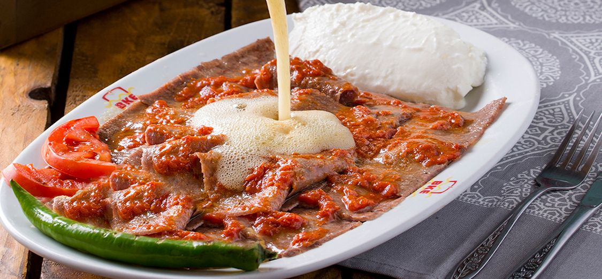

Bestmögliche Mahlzeit

Mercimek Çorbası
- Warum? Eine wärmende, cremige Linsensuppe mit einem Hauch von Zitrone und Minzöl. Sie ist leicht, herzhaft und perfekt, um den Appetit anzuregen.
- Optionaler Begleiter: Fladenbrot oder Pide.

Iskender Kebap
- Warum? Der Star der türkischen Hauptgerichte. Saftiges Lamm- oder Rindfleisch, serviert auf knusprigem Brot, übergossen mit würziger Tomatensauce und einem Klecks Joghurt. Dazu etwas geschmolzene Butter – einfach unwiderstehlich.
- Optionaler Begleiter: Gegrilltes Gemüse oder Reis.

Künefe
- Warum? Dieses Dessert verbindet knusprig gebackenes Kadaifi (Engelshaarteig) mit einer herzhaft-süßen Füllung aus Käse, gekrönt von Sirup und gehackten Pistazien. Es ist der perfekte süße Abschluss eines herzhaften Essens.
- Optionaler Begleiter: Türkischer Tee (Çay).